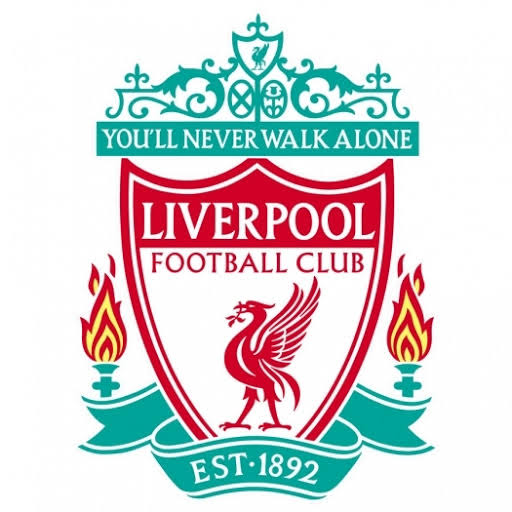

안녕하세요 저는 다니엘 제임스입니다.
1892년에 창단되어 빌 샹클리와 밥 페이즐리 감독 시절, 붉은 제국이라 불리는 전성기를 보냈고[12] 축구 역사에 길이 남을 명승부인 이스탄불의 기적과 안필드의 기적의 주인공이기도 하다.1부 리그 통산 19회 우승을 차지하였으며, 잉글랜드 클럽 중 UEFA 챔피언스 리그 최다 우승팀으로[13] 잉글랜드에서 유일하게 빅 이어를 영구 소장한[14] 명문 클럽이다.
안필드의 임대인이었던 존 하울딩에 의해 창설되었다. 하울딩은 1878년에 에버튼 FC를 공동으로 창단한 사람이기도 하다. 하지만 하울딩과 에버튼은 금전적인 이유로 큰 갈등을 겪었고 당시 에버튼 창단주 가운데 보수적인 성공회 목사도 있어서 맥주제조업으로 돈을 번 하울딩을 못마땅하게 여겼던 갈등 요인도 있었다.[1] 이런 가운데 1891년 하울딩은 구장의 임대료를 100파운드에서 250파운드로 올리려고 했다. 에버튼은 이에 불만을 품고 냅다 구디슨 파크로 자리를 옮겼는데 졸지에 구장이 비어버린 바람에 난감해진 하울딩은 결국 새로 구단을 창단해버렸다. 그 구단이 바로 지금의 리버풀 FC다. 하울딩의 절친이자 축구를 좋아했던 윌리엄 바클리(William Barclay)는 원래 에버튼에서 일하고 있었지만 친구와의 의리를 생각하여 하울딩 옆에서 구단 창단에 도움을 주었다. 같은 지역에 있는데다 이런 이유로 에버튼과는 머지사이드 더비를 이루고 있다. 맨체스터 유나이티드와는 노스웨스트 더비를 이루고 있다.[2]